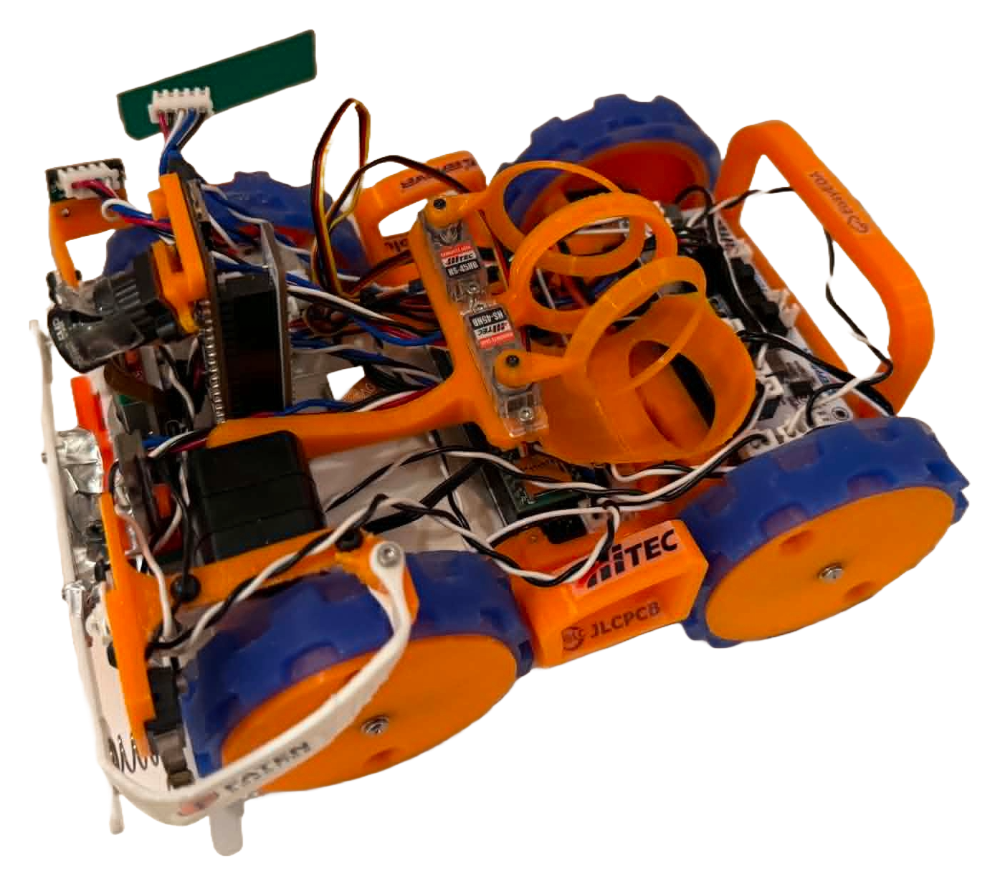

What
I study how robots adapt by forming and revising assumptions about the world.
Why
I’ve spent my life hardcoding adaptability, into robots and into myself through field hockey. What excites me is machines that can learn it the way I had to.

-
[WHAT IT TAUGHT ME ABOUT ADAPTABILITY]
-
Every run, the robot meets a field it hasn’t seen. [KEY RESULT]
-
[WHAT IT TAUGHT ME ABOUT ADAPTABILITY]
-
[WHAT IT TAUGHT ME ABOUT ADAPTABILITY]
-
Moving up to the major league, building toward 2027.
-
The first step from hand-written fixes to robots that learn what went wrong.
How
See how I work